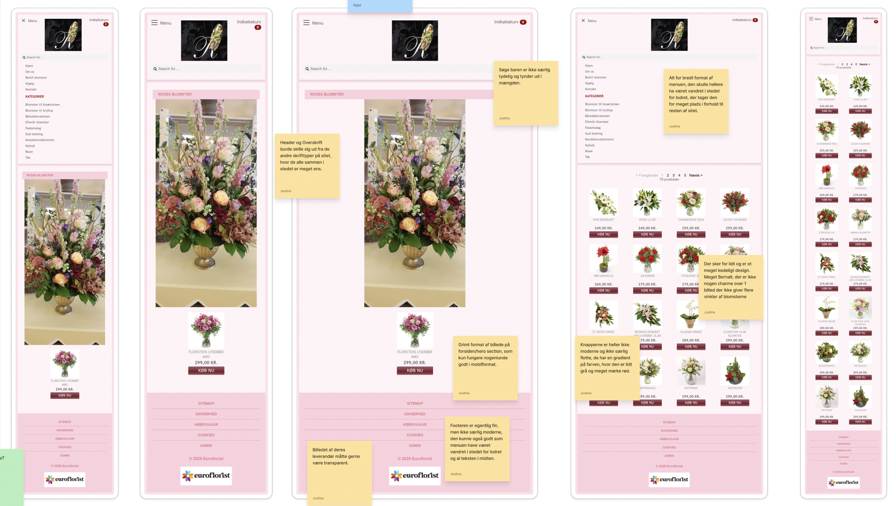

TEMA BESKRIVELSE
I dette tema blev vi introduceret til Visual Studio Code og lærte de mest grundlæggende færdigheder inden for webudvikling, herunder HTML, CSS, Grid og Flexbox. Vi arbejdede med korrekt mappestruktur, brug af eksterne fonte, media queries og validering af hjemmesider. Opgaven bestod i først at udvikle et mobile-first site og derefter tilpasse det til desktop. Vi fik udleveret materiale i form af layouts, diagrammer og wireframes, som dannede grundlag for hjemmesidens opbygning, hvorefter vi selv kunne farvelægge og designe den. Den færdige hjemmeside blev desuden anvendt som en del af vores studiestartsprøve.
